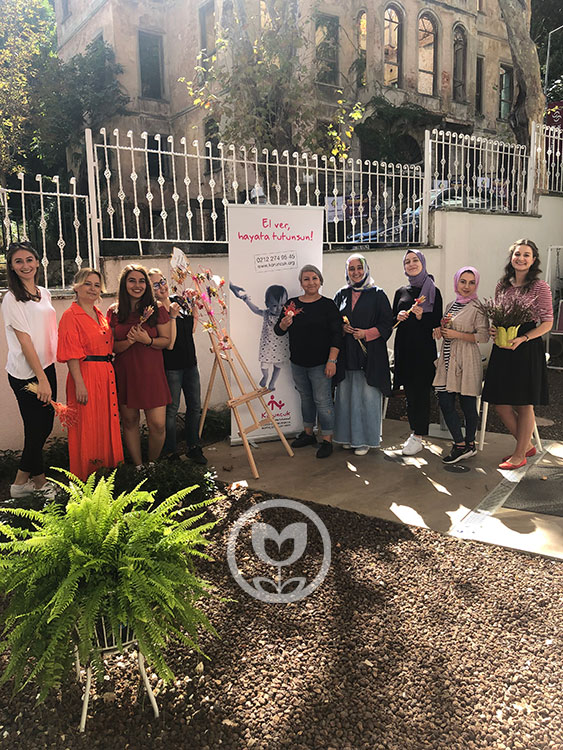
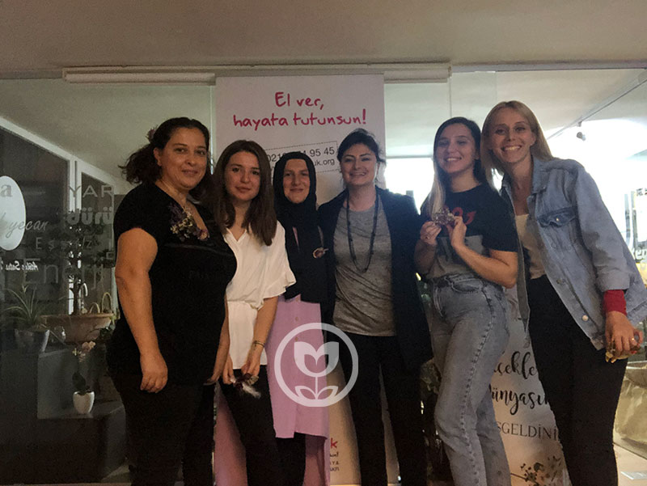
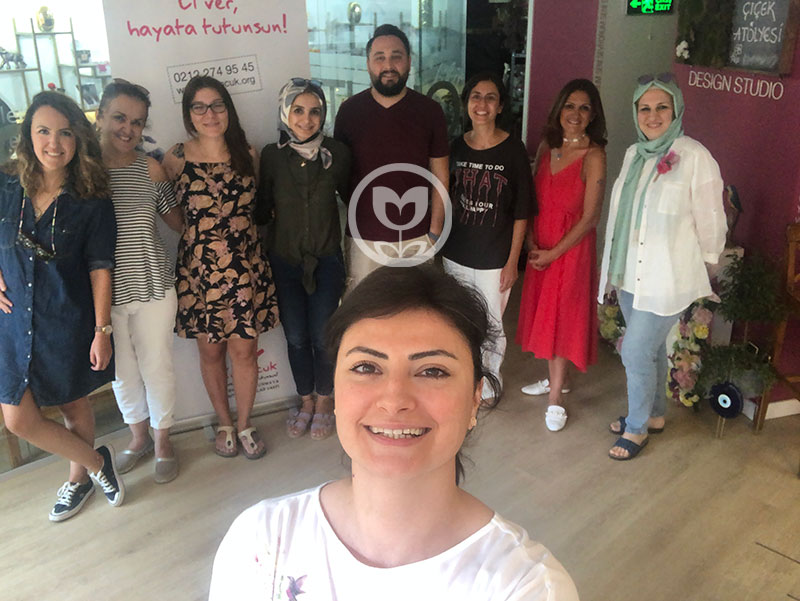
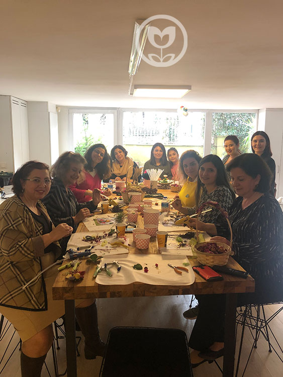
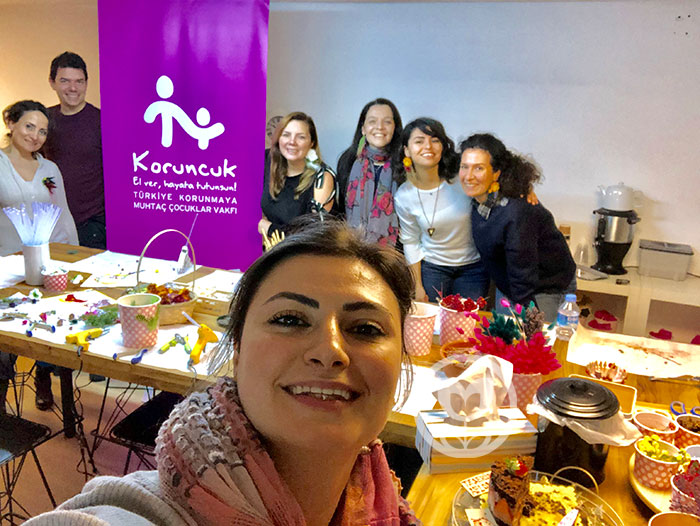
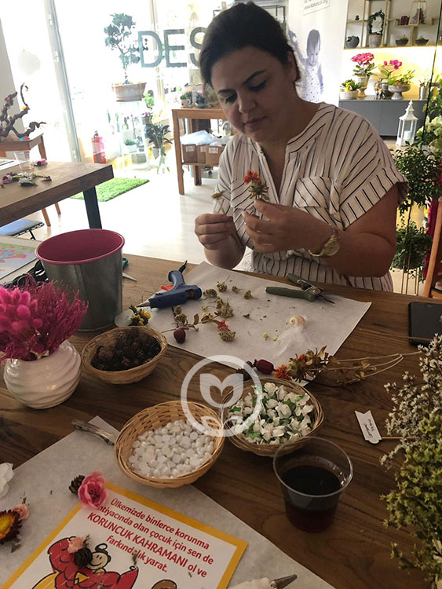
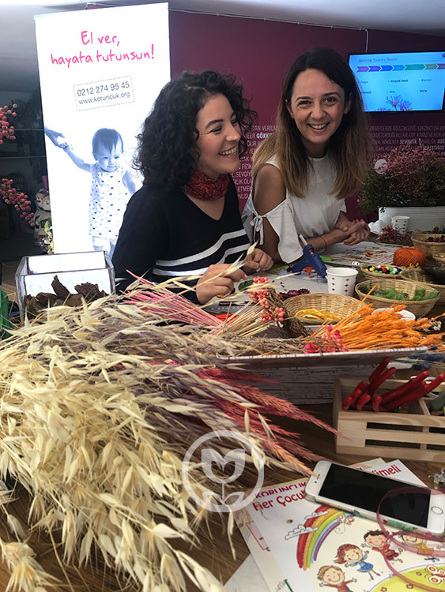

Sürdürülebilirlik projesiGülümseyen Yarınlar Projesi
AFLODAY olarak biz: inançla atılan her adımın bir fayda, bir katkı ve değer yaratma, bir hayali yaşatma olduğuna inanıyoruz. Paylaştıkça da var olacağımızı düşünüyoruz.

AFLODAY Doğadan Gelişim Atölyesi olarak; paylaştıkça var olacağımızı düşünüyor, topluma fayda sağlamayı görev biliyoruz.

Küçük de olsa her işletme odaklandığında ve stratejik hareket ettiğinde topluma bir konuda katkı sağlayabilir, fayda yaratabilir biliyoruz. İddiamız proje sonunda yarattığımız etkiyi belgeleyerek küçük işletmeler için de bir model oluşturmak.

Haklarından yoksun çocukların temel haklarına kavuşabilmesine, iyi bir geleceğe sahip olmasına ve topluma geri kazandırılmasına destek olma amacını güden projede; hakları ihlal edilen çocuklarla ilgili farkındalık yaratmak, şartlarını iyileştirmek üzere toplumu bilinçlendirmek, gönüllüğü teşvik etmek üzere çalışıyoruz.

2019 yılında başlattığımız projenin kısa vadede hedefi online atölyelerle her yıl 1000 kişiye ulaşıp konu ile ilgili farkındalık yaratmak, uzun vadeli hedef ise; çocuk haklarını korumak, sağlıklı toplum için sağlıklı çocuklar yetişmesine destek sağlamak üzere toplumu bilinçlendirmek.
Kapsam
Gülümseyen Yarınlar Projesi kapsamında;

2019 yılında her ay iki adet ücretsiz Koruncuk Gönüllü Atölyesi gerçekleştirdik.

Çocuk haklarını, çocuk hakları ihlallerine karşı yapılabilecekleri, Koruncuk Vakfı’nı anlattığımız atölyeler ile yaklaşık 500 kişiye birebir eriştik, gönüllülüğü teşvik ettik ve yüzlerce kişide konu ile ilgili farkındalık yarattık.

2019 yılından beri finanse ettiğimiz projeyi 2022 yılından itibaren kurum ve bireylerin atölye sponsorluğunda gerçekleştirerek daha fazla sayıda insana ulaşma hedefinde ilerliyoruz.

2022 proje stratejisiyle her ay 2, yılda 24 atölye ile 1000’den fazla gönüllüye ulaşarak 20.000 kişiyle etkileşimli farkındalık, medya erişimiyle 6 milyon kişiye ulaşıp 100 çocuğun 1 yıllık eğitim masrafını karşılamak hedefleniyor.
Koruncuk Vakfı Gönüllü Atölyesi detayları için buraya, kampanyaya bağış yapmak için ise buraya tıklayabilirsiniz.
Atölyeden